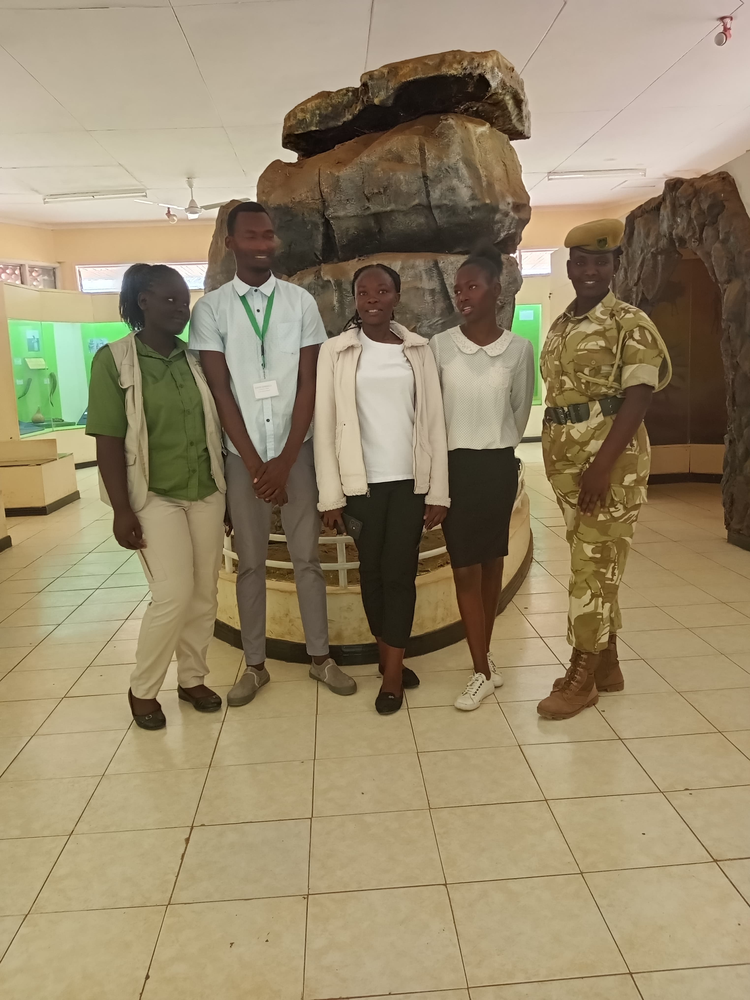
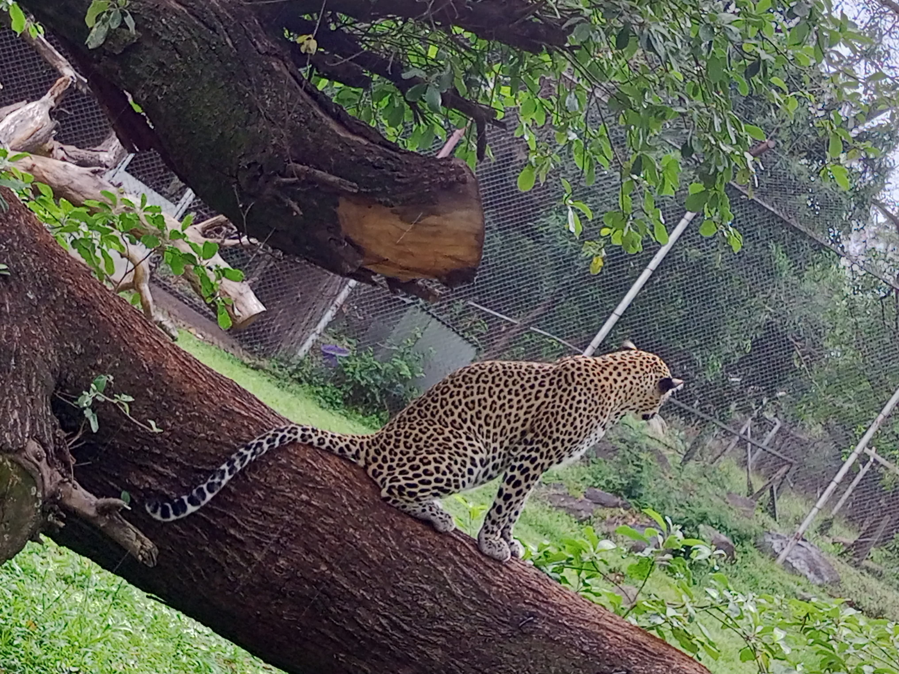

Guided tours, mountain hikes, and unforgettable safaris
Heldronmark Tours and Travel offers guided safaris, mountain hikes, and unforgettable adventures across Kenya's most breathtaking landscapes. We also assist with flight and hotel reservations, making your entire trip stress-free from start to finish.
Hands-on, experienced, and passionate about showing you Kenya's best. Your guide is with you every step of the journey.

